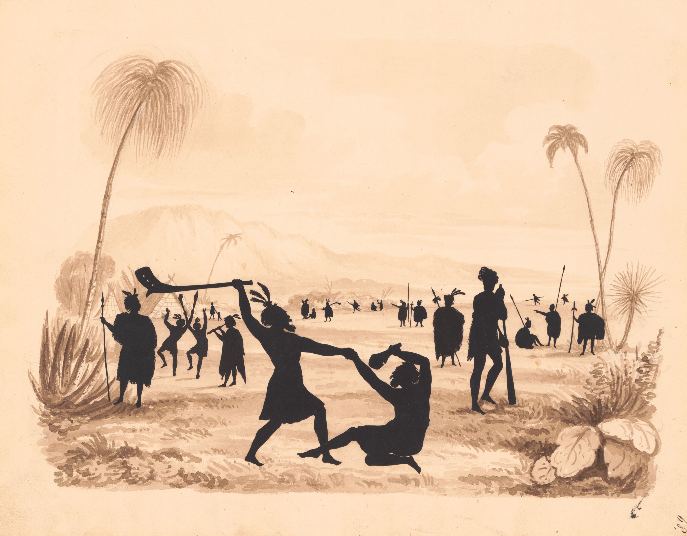

© Auguste Edouart – South Sea Islanders Silhouette (1826–1861)
Before they were introduced to modern artelleries, the Pacific Islanders fought each or others with traditional weapons such as spears, clubs, and slings.
These weapons were often made from materials found in their natural environment, such as wood, stone, shells, fish skin, shark teeth, etc.
The design and use of these weapons varied greatly among the different island cultures, reflecting their unique traditions and combat strategies.